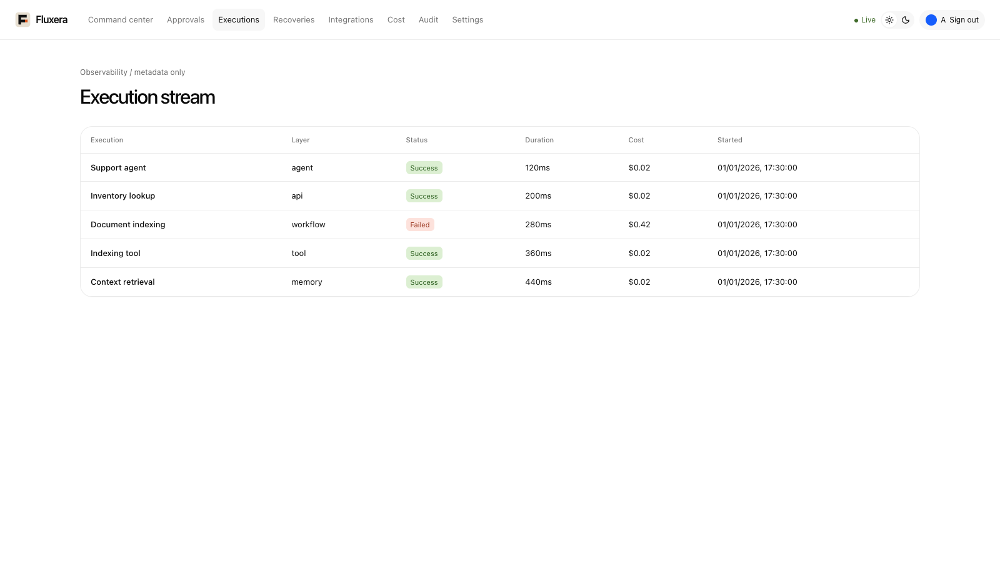
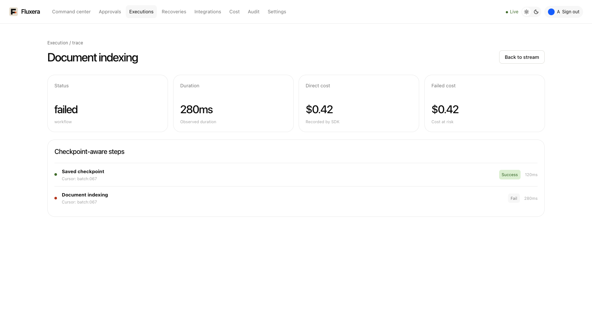
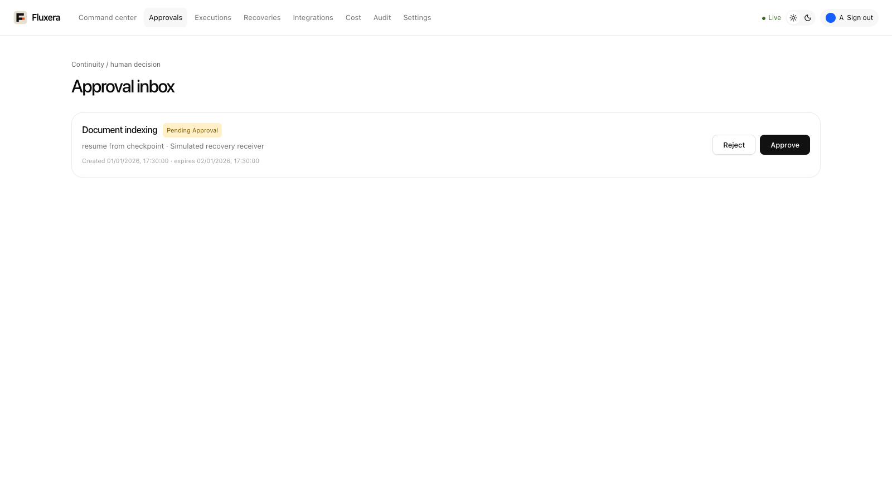
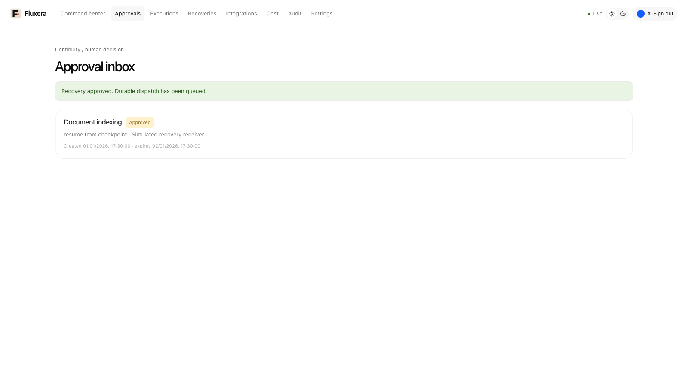
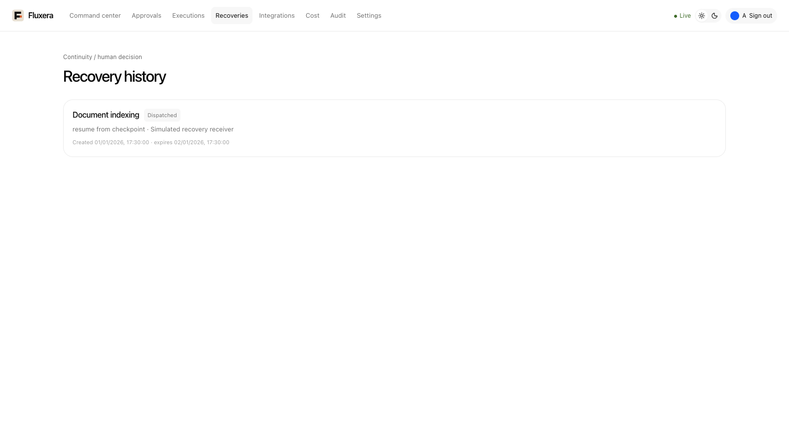
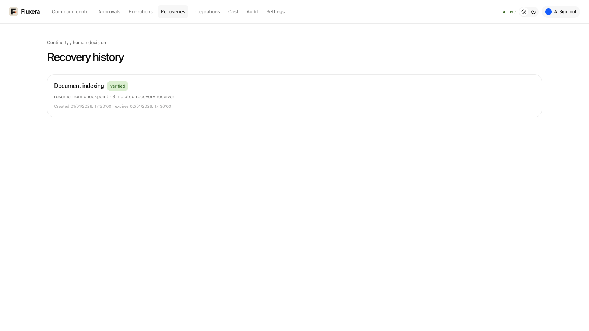
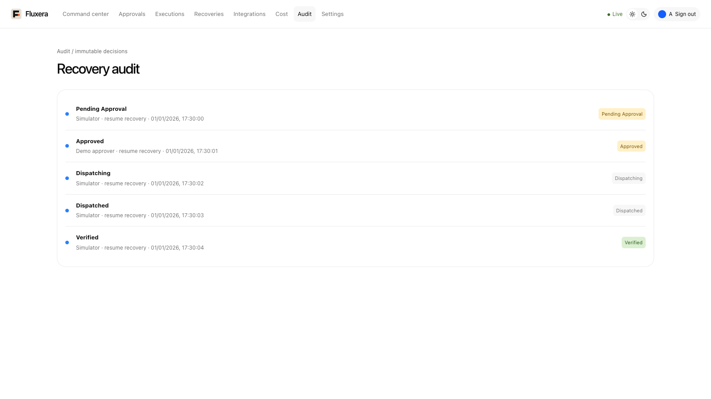
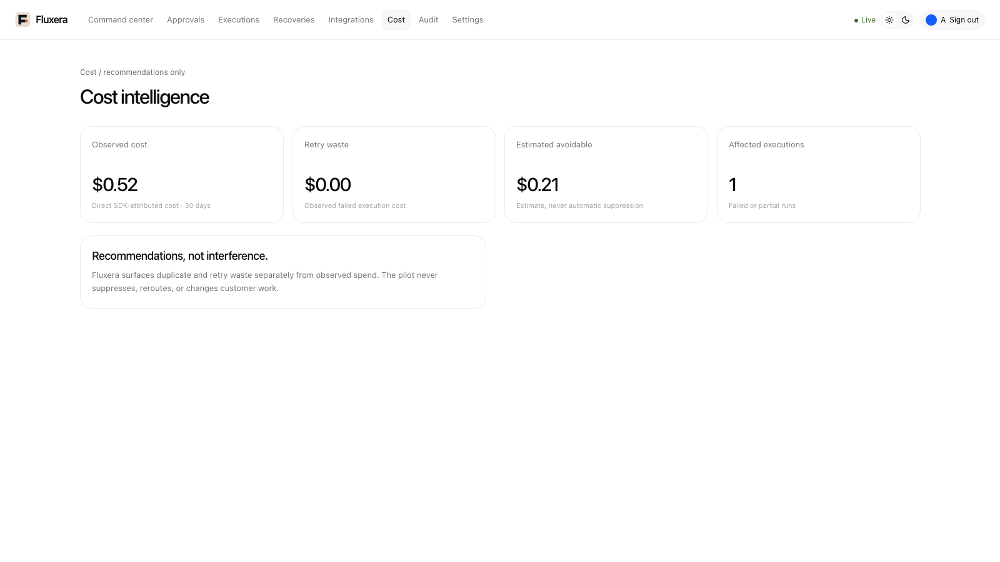
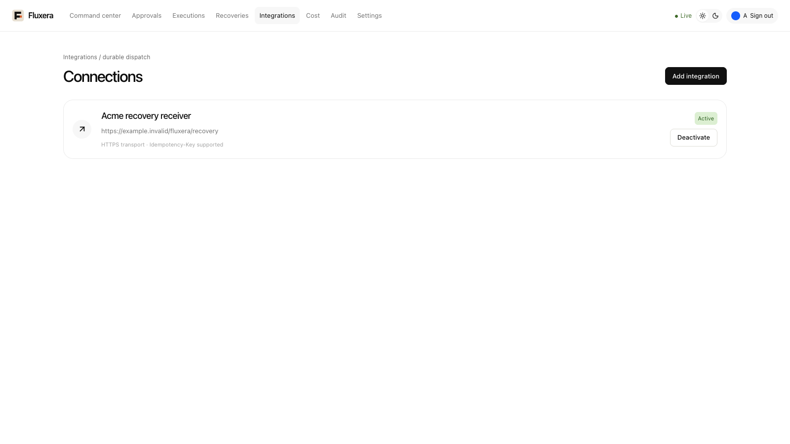
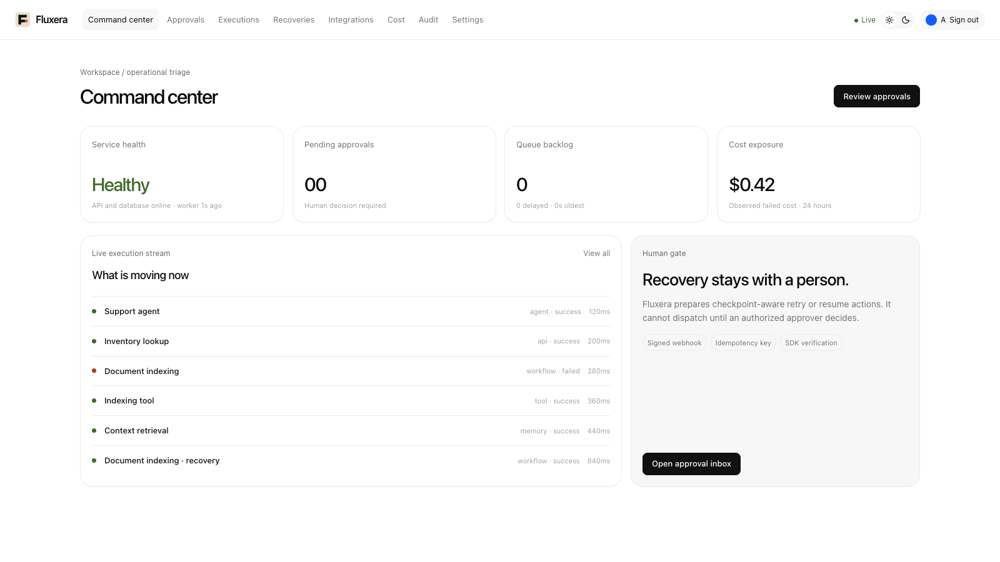

When production work fails, the important question is what happened next.
Fluxera makes that answer visible, accountable, and verifiable.
02 / 12Command center
The command center brings service health, pending human decisions, queue pressure, cost exposure, and the live execution stream into one operational view.

03 / 12Five layers, one execution stream
Agent runs, API calls, workflows, tools, and memory operations share one metadata-only event model.
Each row keeps status, duration, and direct cost in context.

04 / 12Find the checkpoint
Open an execution to see its step trail.
Here, document indexing failed after a saved checkpoint.
The cursor tells an approver where a supported resume can begin.

05 / 12A person decides
Fluxera creates a recovery request, but it does not act on a customer system by itself.
An authorized approver reviews the evidence and decides.

06 / 12Decision recorded
Approval is recorded before any external action.
The request then enters a durable dispatch queue, so a worker restart does not erase it.

07 / 12Signed, idempotent dispatch
The worker sends a signed webhook to the configured recovery receiver, with a recovery identifier and idempotency key.
Delivery is only a handoff.

08 / 12Verification needs evidence
Fluxera marks recovery verified only after a linked SDK execution reports the outcome.
A successful webhook response alone never proves that the work resumed.

09 / 12An auditable trail
The audit view preserves the request, human decision, dispatch state, and final verification as separate events.
The story remains inspectable later.

10 / 12Cost intelligence
Cost intelligence separates observed spend and retry waste from estimated avoidable cost.
In this pilot, these are recommendations, never automatic suppression of customer work.

11 / 12Your recovery receiver
Integrations connect approved actions to customer-controlled recovery endpoints.
Each receiver must declare support for idempotency keys before it can be activated.

12 / 12Observe. Approve. Recover. Verify.
That is Fluxera: a live continuity workspace where people stay in control and results are verified.